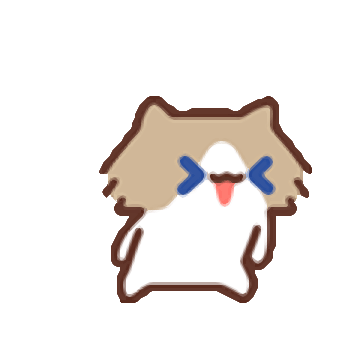

连接状态一眼可见，让猫占据屏幕中央。

横向电量条放在 WPM 两侧，左右镜像填充：左条从右侧消退，右条从左侧消退，百分比在上方；左条代表左手，右条代表右手。断连明确写出。未读到电量显示 --%，不会用 0% 代替。
默认 180 × 180 px，保持动画中心位置不变，可切换尺寸比较。输入时播放 cat-sad.gif，闲置后保留原来的睡觉动画；动画不参与键盘事件处理。
仅显示居中的层名称，去掉 Lx 前缀。输入、闲置、断连、首次配对和低电量均不显示底部文字；音量和滚轮操作可短暂提示。
下方是现有素材来源中的其他动图，点击“试放到屏幕”即可比较。在线图片需要联网；加载失败时可打开原图来源。名称参考上游素材说明。
正常输入已选用：cat-sad.gif，本地素材已同步到设备动画。候选素材来源与署名 · 原作者 @月薪喵。